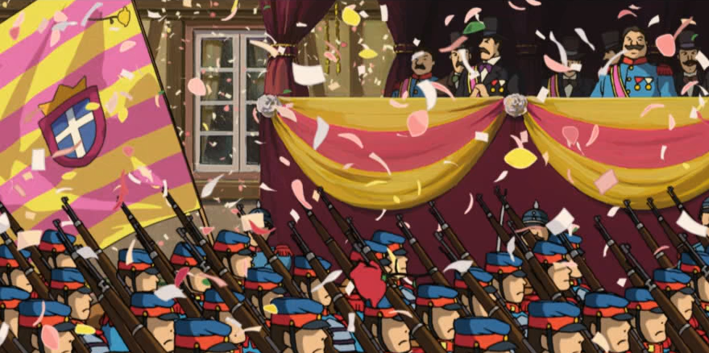

Debanding
This is the most common issue one will encounter. Banding usually happens when bitstarving and poor settings lead to smoother gradients becoming abrupt color changes, which obviously ends up looking bad. These can be fixed by performing blur-like operations and limiting their outputs.
Note that, as blurring is a very destructive process, it's advised to only apply this to necessary parts of your video and use masks to further limit the changes.
There are three great tools for VapourSynth that are used to fix
banding: neo_f3kdb, fvsfunc's gradfun3, which has a built-in
mask, and vs-placebo's placebo.Deband.
Banding example fixed with f3kdb default settings.
neo_f3kdb
deband = core.neo_f3kdb.deband(src=clip, range=15, y=64, cb=64, cr=64, grainy=64, grainc=64, dynamic_grain=False, sample_mode=2)
These settings may come off as self-explanatory for some, but here's what they do:
-
srcThis is obviously your source clip. -
rangeThis specifies the range of pixels that are used to calculate whether something is banded. A higher range means more pixels are used for calculation, meaning it requires more processing power. The default of 15 should usually be fine. Raising this may help make larger gradients with less steps look smoother, while lower values will help catch smaller instances. -
yThe most important setting, since most (noticeable) banding takes place on the luma plane. It specifies how big the difference has to be for something on the luma plane to be considered as banded. You should start low and slowly but surely build this up until the banding is gone. If it's set too high, lots of details will be seen as banding and hence be blurred. Depending on your sample mode, y values will either only have an effect in steps of 16 (mode 2) or 32 (modes 1, 3, 4). This means that y=20 is equivalent to y=30. -
cbandcrThe same asybut for chroma. However, banding on the chroma planes is comparatively uncommon, so you can often leave this off. -
grainyandgraincIn order to keep banding from re-occurring and to counteract smoothing, grain is usually added after the debanding process. However, as this fake grain is quite noticeable, it's recommended to be conservative. Alternatively, you can use a custom grainer, which will get you a far nicer output (see the graining section for more on this). -
dynamic_grainBy default, grain added byf3kdbis static. This compresses better, since there's obviously less variation, but it usually looks off with live action content, so it's normally recommended to set this toTrueunless you're working with animated content. -
sample_modeIs explained in the README. Consider switching to 4, since it might have less detail loss.
In-depth function explanation
TODOGradFun3
The most popular alternative to f3kdb is gradfun3. This function is more resource intensive and less straightforward parameters, but can also prove useful in cases where f3kdb struggles:
import fvsfunc as fvf
deband = fvf.GradFun3(src, thr=0.35, radius=12, elast=3.0, mask=2, mode=3, ampo=1, ampn=0, pat=32, dyn=False, staticnoise=False, smode=2, thr_det=2 + round(max(thr - 0.35, 0) / 0.3), debug=False, thrc=thr, radiusc=radius, elastc=elast, planes=list(range(src.format.num_planes)), ref=src, bits=src.format.bits_per_sample) # + resizing variables
Lots of these values are for fmtconv bit depth conversion or descaling, both of which aren't relevant here. The values really of interest here are:
-
thris equivalent toy,cb, andcrin what it does. You'll likely want to raise or lower it. -
radiushas the same effect asf3kdb'srange. -
smodesets the smooth mode. It's usually best left at its default, or set to 5 if you'd like to use a CUDA-enabled GPU instead of your CPU. Usesref(defaults to input clip) as a reference clip. -
masksets the mask strength. 0 to disable. The default is a sane value. -
planessets which planes should be processed. -
debugallows you to view the mask. -
elastcontrols blending between debanded and source clip. Default is sane. Higher values prioritize debanded clip more.
In-depth function explanation
TODO For a more in-depth explanation of what `thr` and `elast` do, check the algorithm explanation inmvsfunc.
placebo.Deband
This debander is quite new to the VapourSynth scene, but it's very good at fixing strong banding. However, as such, it is also prone to needless detail loss and hence should only be used when necessary and ideally combined with a detail/edge mask. It's (current) parameters:
placebo.Deband(clip clip[, int planes = 1, int iterations = 1, float threshold = 4.0, float radius = 16.0, float grain = 6.0, int dither = True, int dither_algo = 0])
It's not unlikely that this function will see significant change in the future, hence the README is also very much worth reading.
Parameters you'll want to look at:
-
planesobviously the to-be-processed planes. The syntax is different here, check the README. In short, default for luma-only,1 | 2 | 4for luma and chroma. -
iterationssets how often the debander is looped. It's not recommended to change this from the default, although this can be useful in extreme cases. -
thresholdsets the debander's strength or rather the threshold when a pixel is changed. You probably don't want to go much higher than 12. Go up in steps of 1 and fine-tune if possible. -
radiusdoes the same as for the previous functions. -
grainis again the same asf3kdb, although the grain is a lot nicer.
In-depth function explanation
TODO It uses the mpv debander, which just averages pixels within a range and outputs the average if the difference is below a threshold. The algorithm is explained in the source code.Banding detection
If you want to automate your banding detection, you can use banddtct from awsmfunc. Make sure to
adjust the values properly and check the full output. Check this link for an explanation on how to use it. You can also just run adptvgrnMod or adaptive_grain with a high luma_scaling value in hopes that the
grain covers it up fully. More on this in
the graining section. Note that both of these methods won't be able to pick up/fix every kind of banding. banddtct can't find banding covered by grain, and graining to fix banding only works for smaller instances.
Deblocking

Deblocking is mostly equivalent to smoothing the source, usually with
another mask on top. The most popular function here is Deblock_QED
from havsfunc. The main parameters are
-
quant1: Strength of block edge deblocking. Default is 24. You may want to raise this value significantly. -
quant2: Strength of block internal deblocking. Default is 26. Again, raising this value may prove to be beneficial.
In-depth function explanation
TODOOther popular options are deblock.Deblock, which is quite strong, but
almost always works,
In-depth function explanation
TODOdfttest.DFTTest, which is weaker, but still quite aggressive, and
fvf.AutoDeblock, which is quite useful for deblocking MPEG-2 sources
and can be applied on the entire video. Another popular method is to
simply deband, as deblocking and debanding are very similar. This is a
decent option for AVC Blu-ray sources.